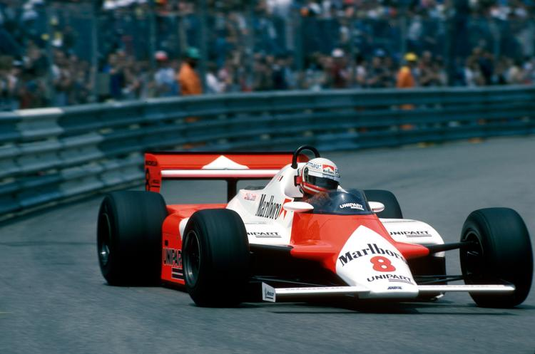
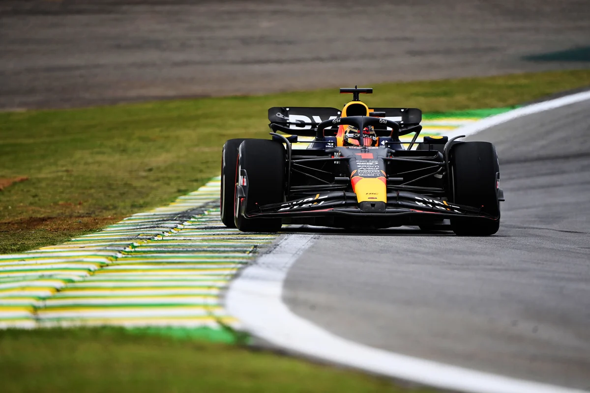

A Formula-1 a legrangosabb nemzetközi autóverseny-sorozat. Az első hivatalos világbajnokságot 1950-ben rendezték meg, a Silverstone-i pályán, Nagy-Britanniában. Az Alfa Romeo csapata uralta azt az első szezont.


Az Aerodinamikai Forradalom
A 70-es és 80-as évek elhozták az aerodinamikai forradalmat. A csapatok rájöttek, hogy az autó alakja döntő szerepet játszik a teljesítményben. Leszorítóerő, diffúzorok és szárnyak váltják fel az egyszerű karosszériákat.
0
Első VB
0
Hamilton & Schumacher rekord-bajnokság
0
Szezonok
Legendák
Olyan legendák születtek ebben az időszakban, mint Niki Lauda, Ayrton Senna és Alain Prost. Versengésük máig az F1 történetének legemblematikusabb fejezete. Senna és Prost rivalizálása különösen bekerült a sportág mitológiájába.